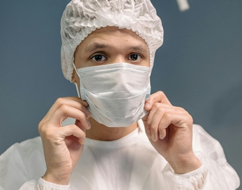
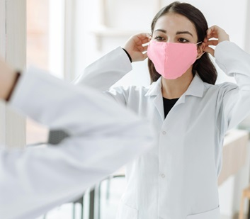

Trabajar en el ámbito sanitario conlleva una amplia gama de riesgos, desde el ruido hasta las agresiones, además de exposiciones específicas a agentes biológicos, radiaciones y productos químicos. La prevención de riesgos laborales en este sector tiene como objetivo proteger tanto a los pacientes como a los trabajadores mediante evaluaciones continuas y medidas preventivas adecuadas. La planificación previa y la actualización constante son fundamentales para garantizar la eficacia de estas medidas, especialmente en vista de las lecciones aprendidas durante la pandemia.
Los equipos de protección individual (EPI) deben complementar un plan de prevención integral y equipos de protección colectiva. Son la última línea de defensa cuando otros métodos de protección no eliminan por completo los riesgos. Es esencial realizar revisiones periódicas del equipo para garantizar su funcionamiento adecuado.
Hay una amplia variedad de opciones en la protección respiratoria. Esta protección debe ser escogida en función del riesgo al que vayamos a exponernos. Hay dos grandes grupos: equipos autofiltrantes y máscaras con filtros (para partículas o para gases y vapores).
mascarillas reutilizables (R), desechables o no reutilizables (NR), con o sin válvula de exhalación, todas con niveles de protección comprendida entre FFP1 a FFP3 según la norma EN 149:2001+A1:2009.
medias máscaras o máscaras completas con filtros intercambiables contra partículas(polvo y aerosoles) y agentes biológicos, y filtros contra gases y vapores. Ambos tipos de filtros pueden utilizarse simultáneamente (filtros combinados). En función del filtro estaremos protegidos frente a distintos agentes.
En el sector sanitario la vía ocular puede actuar como lugar de accidentes laborales debidos a salpicaduras y/o proyecciones de líquidos. Es muy importante hacer uso de un EPI para la zona ocular que sea cómodo, homologado y tenga un tratamiento antiempañamiento.
Los profesionales de la salud requieren un calzado que cumpla con una serie de características específicas debido a las largas jornadas laborales que realizan. Este calzado debe garantizar comodidad, transpirabilidad, ser antibacteriano, resistente a perforaciones, antideslizante y estar homologado. Los zuecos, ya sean abiertos o cerrados, se destacan como la mejor alternativa debido a su ligereza, flexibilidad y la posibilidad de lavarlos múltiples veces.
Los guantes de uso dual combinan la función de Equipo de Protección Individual (EPI) y Producto Sanitario (PS), protegiendo tanto al trabajador como al paciente de la transmisión de agentes biológicos. Pueden ser de dos tipos: guantes de examen (estériles o no, Clase I) y guantes quirúrgicos (siempre estériles, Clase IIa). Es esencial verificar en el marcado o embalaje si ofrecen protección contra bacterias y hongos (pictograma de riesgo biológico) y/o virus (pictograma con la palabra VIRUS).
En resumen, dentro de la categoría de vestuario para el sector sanitario, se incluyen prendas como casacas, pantalones, pijamas, batas y buzos. Es importante destacar que aunque no toda la ropa es considerada equipo de protección individual (EPI), los uniformes sanitarios son esenciales para transmitir profesionalidad y generar confianza en los pacientes. Estas prendas deben ser modernas, elegantes y ergonómicas, priorizando la comodidad y la libertad de movimiento. Además, es crucial que se muestre una imagen de limpieza e higiene para reforzar la confianza en el entorno sanitario.
